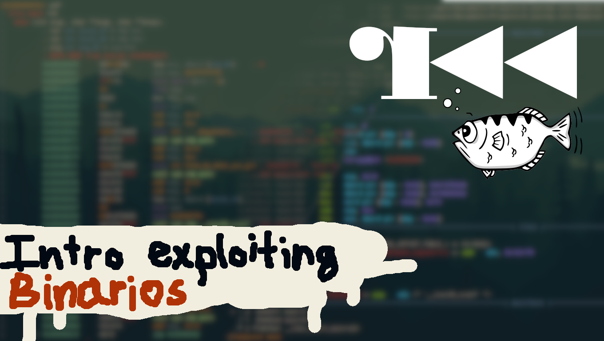

Intro Hacking Binarios en Linux
Table of Contents

1 Sesiones
Inscripciones en Delegación
| Contenido | Día | Mañana | Tarde |
|---|---|---|---|
| Intro | Martes 12 Febrero 2019 | 12 - 14 | 15 - 17 |
| Taller | Martes 19 Febrero 2019 | 12 - 14 | 15 - 17 |
2 Introducción
El cursillo consistirá en dos sesiones, una de introducción mas teórica y otra de un taller donde utilizaremos los conocimientos aprendidos.
Se explicarán a grandes rasgos como funcionan los archivos ejecutables en Linux, las distintas secciones que tienen y como se distribuyen en memoria. Una vez explicado se procederá a establecer una relación entre el código en C y el lenguaje de ensamblador para poder ver las convenciones que existen y más tarde poder aprovecharnos de algunas de las vulnerabilidades más comunes.
Se utilizarán las herramientas de software libre radare2 y pwndbg para la inspección y "depuración" de los binarios. Se recomienda tener una distro basada en Debian, como Ubuntu, con el paquete build-essential instalado. También es deseable tener tanto radare2 como pwndbg para ahorrar tiempo y empezar el taller lo antes posible.
3 Requisitos previos
- Saber un poco de programación en C
- Tener un Linux instalado (ya sea en maquina virtual o disco)
- Ganas de aprender
- Clonar los repositorios
4 Instalaciones
4.1 Herramientas de desarrollo
sudo apt update sudo apt upgrade sudo apt install build-essential git
4.2 Pwndbg
git clone https://github.com/pwndbg/pwndbg.git cd pwndbg ./setup.sh cd ..
4.3 Radare2
git clone https://github.com/radare/radare2.git cd radare2 sys/install.sh cd ..
4.4 Otros
mkdir talleres cd talleres https://github.com/ZenTauro/intro_exploiting_binarios.git cd ..
5 Como compilar binarios para análisis
En el directorio donde estén los archivos .c ejecutamos: (tenemos que sustituir ejemplo.c con el nombre del programa)
gcc -m32 -fno-stack-protector -O0 ejemplo.c -o ejemplo
6 Radare2 cheatsheet
6.1 Posicionamiento
| Comando | Descripción |
|---|---|
| s dirección | Mover el cursor a la dirección |
| s-n | Mover n bytes hacia atrás |
| s- | Deshacer s |
| s+ | Rehacer s |
6.2 Información
| Comando | Descripción |
|---|---|
| i | Información |
| iS= | Información Secciones del Binario con ASCII |
| iz | Información strings en sección .data |
| iI | Información sobre el archivo |
| ii | Simbolos importados |
| il | Librerías enlazadas |
6.3 Análisis
| Comando | Descripción |
|---|---|
| aaa | Analisis nivel 3 |
| axt | Buscar referencias a la dirección actual |
| afi | Información sobre función actual |
6.4 Print
| Comando | Descripción |
|---|---|
| Enseñar Función desensamblada | |
| p= | ASCII entropía |